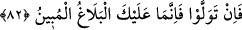
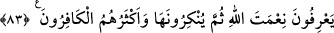

ortak koşmakta olduğunuz şeyleri terk edersiniz ve O’nun emrine boyun eğersiniz.
82. (Ey Rasûlüm!) Yine de yüz çevirirlerse, artık sana düşen ancak açık bir
tebliğden ibarettir.
“Yine de” onlar İslam’dan “yüz çevirirlerse,” önlerine konan delil, ibret ve
nasihatları kabûl etmezlerse demektir. Burada asıl fıtratın Allah’a yönelmeyi
gerektirdiğine işâret vardır. Ondan yüz çevirmek ise ancak tekellüf ve zorlama ile olur.
“Artık sana düşen ancak açık bir tebliğden ibarettir.” Senin tarafından bir eksiklik
yoktur. Çünkü senin görevin apaçık bir tebliğdir. Bunu da, daha fazlası mümkün
olmayacak şekilde yerine getirmiş oldun. Önceki âyetteki “müslüman olmanız için”
ifâdesinin aksine, sebeb müsebbebin yerine konulmuştur.
Şeyh Sa‘dî (k.s.) der ki:
Biz nasîhati kendi yerinde eyledik
Bir zaman nasîhat ile meşgul olduk
Eğer kimse nasîhati dinlemeye rağbet etmese de
Peygamberlere düşen haber vermektir, o kadar
Yine o şöyle der:
Faydalı olduğunu bildiğin sözü söyle
Hiç kimseye makbul gelmez ise de
Ki yarın kıyâmette pişmanlık coşar
Ki ah niçin hak sözü dinlemedim diye
83. Onlar Allah’ın nîmetini bilirler (itiraf ederler). Sonra da onu inkâr ederler.
Onların çoğu kâfirdir.
“Onlar” bazı müşrikler “Allah’ın” bu sûrede sayılan “nîmetini bilirler” ve
Allah’tan olduğunu îtiraf ederler. “Sonra da onu” ya nîmeti verenden başkasına taparak
fiilleriyle ya da putların kendileri için şefâatçi olduğunu söyleyerek sözleriyle ve
benzeri sebeplerle Allah’ın nîmetini “inkâr ederler.” “Sonra” kelimesi, nîmeti vereni
tanıdıktan sonra inkâr etmenin normal olmadığı mânâsını vermektedir. “Onların çoğu
kâfirdir.” Zikredilenleri îtiraf etmeksizin kalpleriyle inkâr eden münkirlerdir.